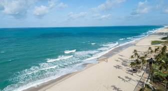
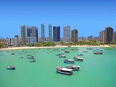
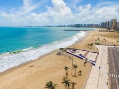
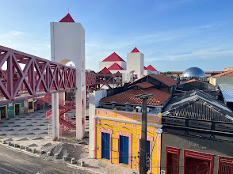
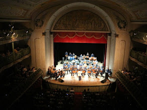
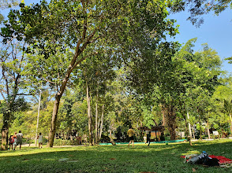
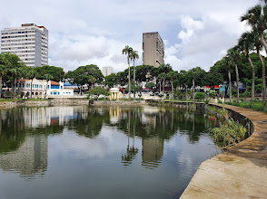
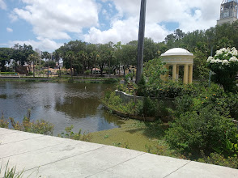

Praias em Fortaleza
-
Praia do Futuro
é a praia mais famosa de Fortaleza, com cerca de 6 a 8 km de extensão, mar verde de águas mornas e ondas fortes. Ela se destaca pelas grandiosas barracas de praia, que funcionam como complexos de lazer e restaurantes à beira-mar.



-
Praia de Meireles
é uma das praias mais famosas e movimentadas de Fortaleza, Ceará, localizada na zona nobre da Avenida Beira Mar. Ela se destaca pela excelente infraestrutura turística, águas calmas (protegidas por um quebra-mar) e por abrigar a tradicional Feirinha da Beira Mar, um dos melhores pontos para comprar artesanato local e castanhas.
-
Praia de Mucuripe
é a continuação natural da Praia de Meireles em Fortaleza, Ceará, sendo historicamente conhecida como o reduto dos pescadores e de suas tradicionais jangadas. Ela abriga o famoso Mercado de Peixes do Mucuripe, onde os visitantes compram frutos do mar frescos e pedem para prepará-los na hora nos quiosques dos fundos.



-
Praia de Iracema
é um famoso bairro e cartão-postal boêmio em Fortaleza, Ceará, conhecido por pontos como a Ponte dos Ingleses, o Centro Dragão do Mar e a Estátua de Iracema.




Cultura
-
Centro Dragão do Mar de Arte e Cultura
é um grande complexo cultural em Fortaleza, famoso por reunir o Cinema do Dragão, museus e o planetário. Localizado na Praia de Iracema, ele homenageia o líder abolicionista Chico da Matilde.



-
Teatro José de Alencar
O Theatro José de Alencar é um teatro brasileiro, localizado na cidade de Fortaleza, no Ceará. É referência artística, turística e arquitetônica no país, além de ser tombado pelo Instituto do Patrimônio Histórico e Artístico Nacional. Enquanto teatro-monumento, conta com seleta programação cênica e diversificada pauta de atividades sócio-culturais e artísticas.



Parques e Contato com a Natureza
-
Parque Estadual do Cocó
O Parque Estadual do Cocó é o maior parque natural em área urbana do Norte e Nordeste do Brasil e o quarto da América Latina, sendo o maior fragmento verde da cidade de Fortaleza, com extenso manguezal e dunas milenares no entorno. Com mais de dois quilômetros de trilhas interligadas, essa área é ideal para quem quer praticar esportes e contemplar a natureza.



-
Parque da Liberdade Fortaleza
O Parque da Liberdade foi construído onde antes foi a Lagoa do Garrote, que era formada pela junção das águas de dois riachos: um vindo da atual praça Clóvis Beviláqua e outro que vinha pela atual Duque de Caxias. Rodolfo Teófilo, em seu livro História da Seca do Ceará, assim se pronuncia: “Na Boulevard da Duque de Caxias havia um riacho, onde a meninada se divertia pescando piabas e carás.”


